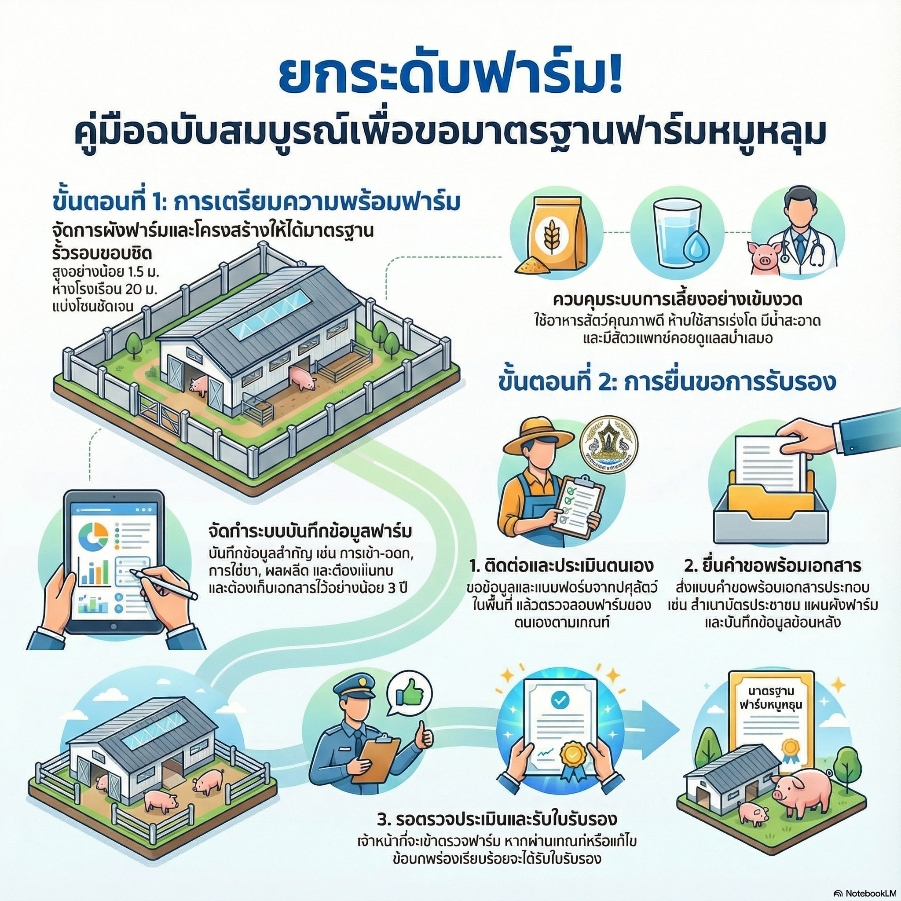
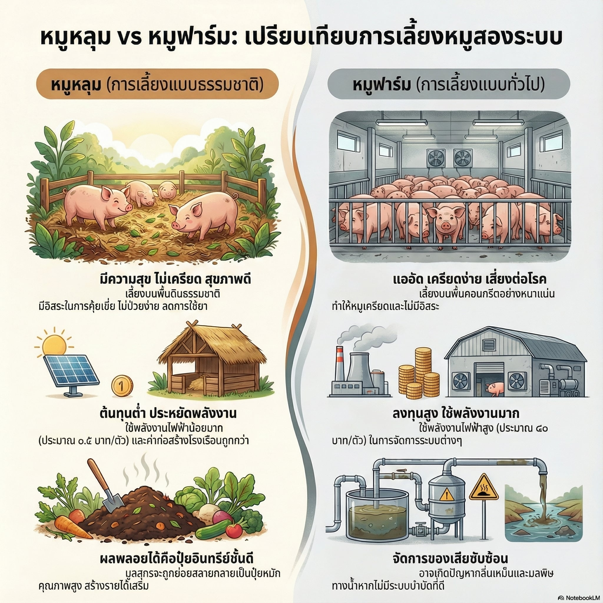

16 ก.พ. 2569
ตอนที่ 1 หมูหลุม "นวัตกรรมไร้กลิ่น"
เปิดซีรีส์องค์ความรู้หมูหลุมจากงานวิจัยสู่การใช้ประโยชน์จริงในพื้นที่.
รับชมบน YouTubeตรวจรายการผ่านทีละข้อจากภาพตัวอย่างใน PowerPoint ได้ในหน้าเดียว ระบบจะคำนวณคะแนน สรุปข้อที่ยังขาด และบอกสิ่งที่ควรทำต่อให้ทันที
ดูจุดตัวอย่างจากไฟล์ PowerPoint เพื่อเทียบกับฟาร์มของตัวเองได้ทันที
เลือกพร้อม ต้องปรับ หรือยังไม่มี แล้วดูคะแนนรวมและความพร้อมเบื้องต้นได้เลย
ระบบจะเรียงรายการที่ควรรีบทำก่อนเพื่อช่วยเตรียมหลักฐานให้ครบก่อนยื่นประเมิน
โดย มรภ.ชม., มช., สวพส. และกรมปศุสัตว์ สนับสนุนโดย สำนักงานพัฒนาการวิจัยการเกษตร (องค์การมหาชน) ออกอากาศต่อเนื่องทาง NBT เช้านี้ที่ภาคเหนือ ระหว่าง 16-25 ก.พ. 2569
ยกระดับการเลี้ยงหมูหลุม ลดต้นทุน เป็นมิตรต่อสิ่งแวดล้อม และสร้างรายได้ที่มั่นคงให้ครัวเรือนเกษตรกร

แนวคิด วิธีเริ่มต้น การจัดการคอก วัสดุรองพื้น อาหาร และสุขภาพสัตว์สำหรับมือใหม่

ออกแบบคอก การระบายอากาศ การเลือกใช้แกลบ/ขี้เลื่อย/ถ่านแกลบ และการดูแลวัสดุรองพื้น

ผลการศึกษาเชิงทดลองเกี่ยวกับการลดกลิ่น ลดต้นทุน และผลกระทบต่อสิ่งแวดล้อมของระบบหมูหลุม